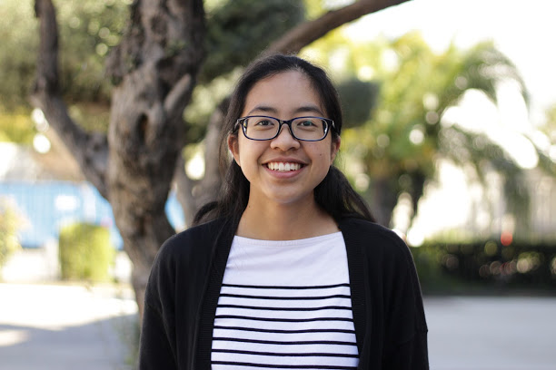
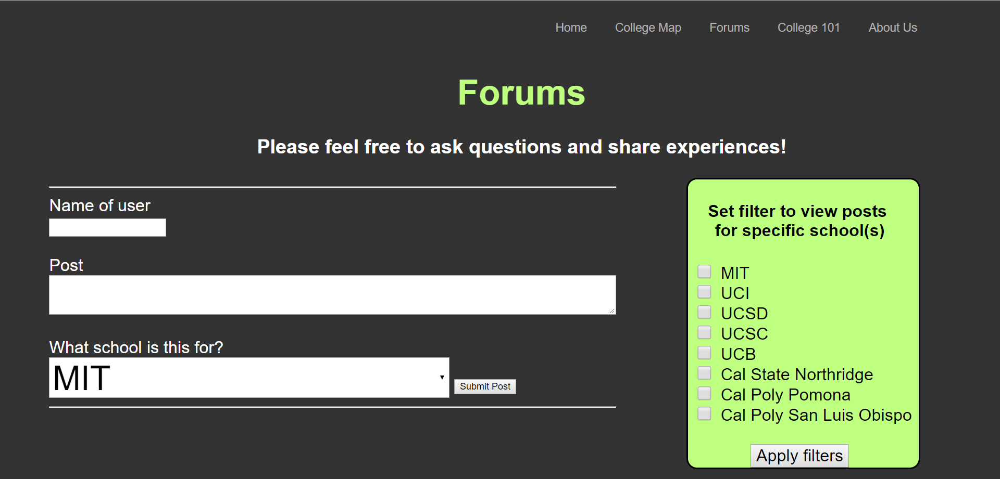

Hi! My name is Rebecca, and I like to microwave things. After exploding a microwave in my childhood,
I learned to not fear accidents and mistakes in the pursuit of discoveries.
With this trait, and an incessant
desire to personalize and improve aspects of modern life, I uncovered a passion for computer science. Currently, I am an intended computer
science and linguistics double major at the University of California, Berkeley. Through the exploration of these two topics, I aim to understand, promote, and develop
global relations. I also find passion in the topic of educational technology, specifically how technology can be used in order to bridge the gap between underrepresented minorities or individuals from under-resourced backgrounds.
During the summer before my freshman year in college, I attended Google CSSI. Project Pioneer, the result of a three-person collaboration, was my final project for the program.
It is a website aimed to help incoming, and specifically first-generation, college students find all the information they need regarding the college application
process. My job was to develop a forums page as well as to maintain the deployment and database via Google App Engine and Datastore.
